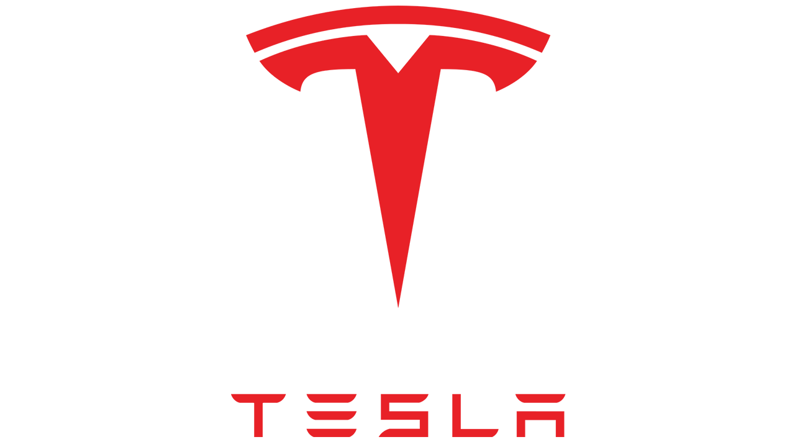
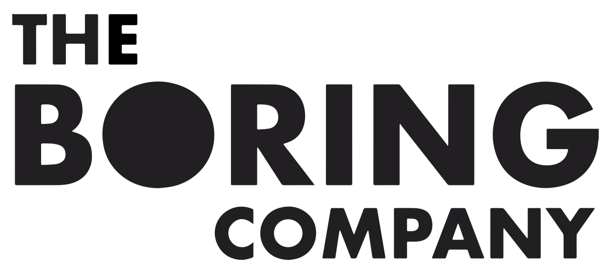

Tesla motors

Tesla fue fundada en 2003 por un grupo de ingenieros que querían demostrar que es posible conducir con energía eléctrica sin necesidad de hacer concesiones y que los vehículos eléctricos pueden ser mejores, más rápidos y más divertidos de manejar que los autos a gasolina. Hoy en día, Tesla no solo construye vehículos totalmente eléctricos, sino que también fabrica productos de almacenamiento y generación de energía limpia que pueden ampliarse de manera ilimitada. Tesla cree que el mundo estará mejor entre más pronto dejemos de depender de los combustibles fósiles y avancemos hacia un futuro con cero emisiones.
Neuralink

Neuralink Corporation es una empresa de neurotecnología especializada en el desarrollo de interfaces cerebro-computadora, implantables, también conocidos como Brain-Machine Interfaces o BMI, fundada por Elon Musk. Actualmente se encuentran desarrollando un dispositivo capaz de tratar pacientes que sufran de discapacidades causadas por desórdenes neurológicos mediante estimulación cerebral directa. Y, según declaraciones de Musk, la tecnología desarrollada por Neuralink busca, a la larga, lograr una simbiosis total con la inteligencia artificial.
Spacex

Space Exploration Technologies Corp., conocida como SpaceX, es una empresa estadounidense de fabricación aeroespacial y de servicios de transporte espacial con residencia en Hawthorne (California). Fue fundada en 2002 por Elon Musk con el objetivo de reducir los costes de viajar al espacio para facilitar la colonización de Marte.
The Boring company

The Boring Company es un juego de palabras que significa en español La Compañía Aburrida o la Empresa Tuneladora. Fue fundada por Elon Musk, el creador de Tesla, Space X o PayPal, a finales de 2016, pero ya cuenta con proyectos de lo más interesantes entre sus filas.
Entre ellos se encuentra Hyperloop, un nuevo concepto de transporte pensado para mejorar la velocidad de los aviones, implementándolo por tierra como si fuera un tren.